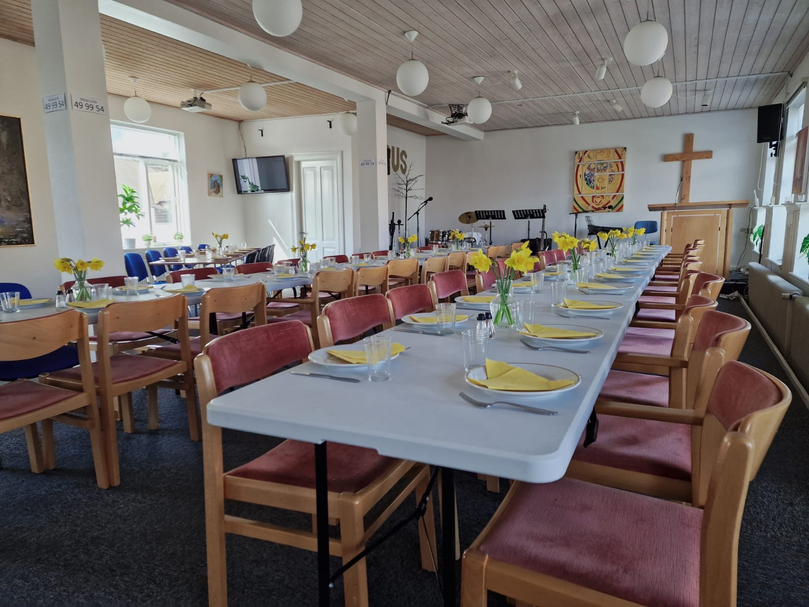
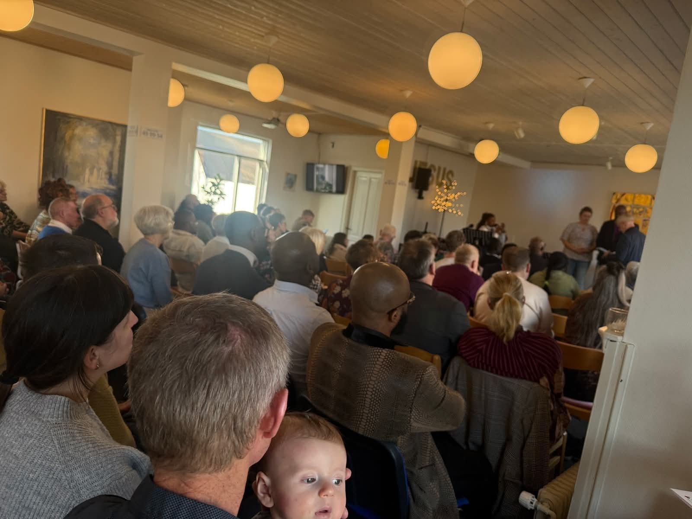
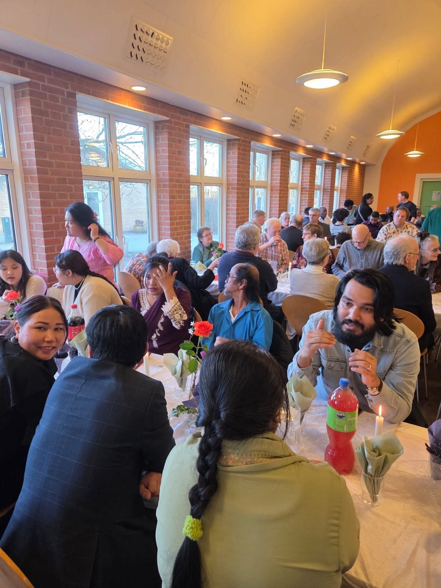
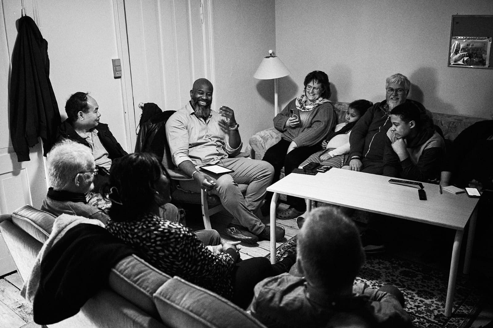
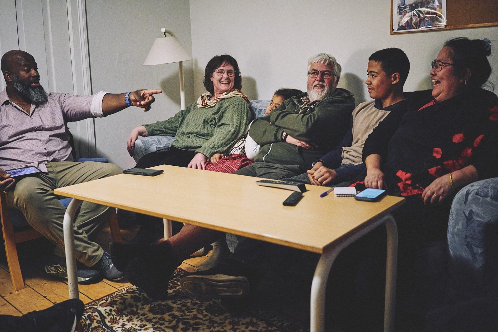

Ord fra vores præst

1. marts 2026
Det var en stor glæde og en stærk oplevelse at se så mange mennesker samlet den 1. marts i Nykøbing Mors Frikirke i forbindelse med min indsættelse som præst. Efter en periode med kolde og grå dage brød solen frem — som et spejl af den glæde, der lyste i ansigterne...
Læs Mere
8. marts 2026
Vi taler alle om kærlighed. Men elsker vi egentlig på samme måde? Bibelen viser os, at der findes forskellige former for kærlighed: Eros tiltrækker, phileo knytter bånd, men agape giver. Den sande kærlighed bliver åbenbaret i Jesus Kristus...
Læs Mere
15. marts 2026
I en verden præget af uro og forandring kan fred virke afhængig af vores omstændigheder. Men den sande fred kommer ikke fra det, der sker omkring os — den kommer fra det, vi tror på. Troen lærer os ikke at bygge på det, vi ser, men på det, Gud siger...
Læs Mere
22. marts 2026
Vores identitet i Kristus afhænger ikke af de omstændigheder, vi gennemgår, men af Ham, som har defineret os. Bibelen siger: « Hvis nogen er i Kristus, er han en ny skabning. Det gamle er forbi, se, noget nyt er blevet til. »...
Læs Mere